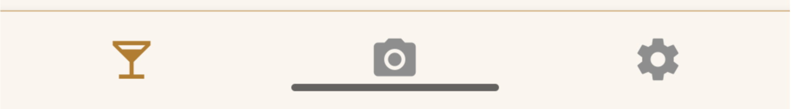
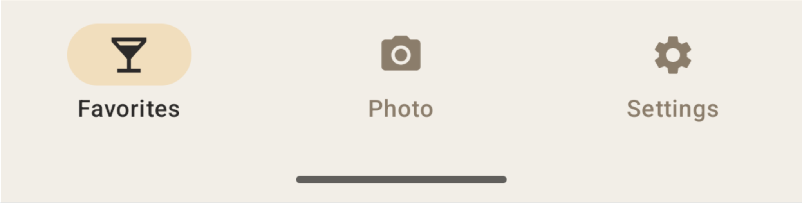
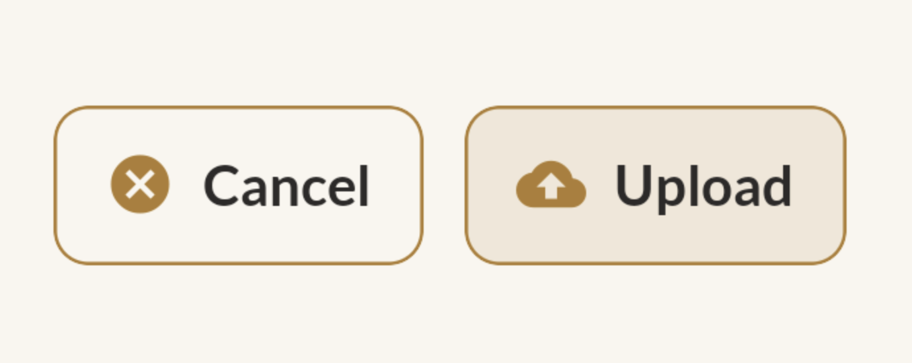
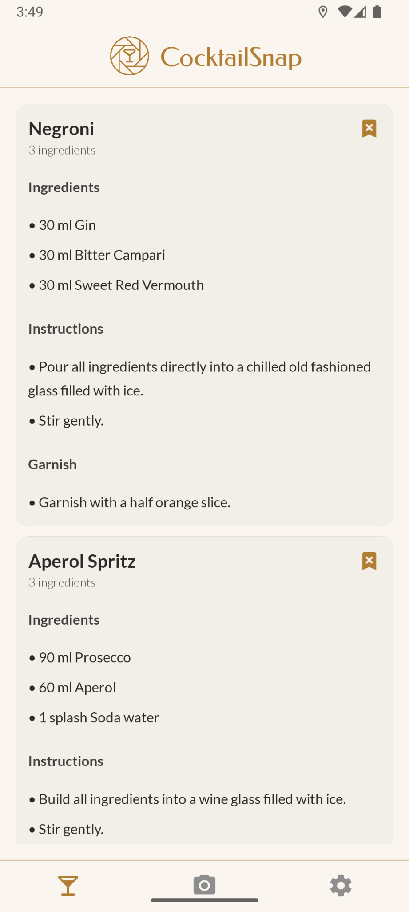
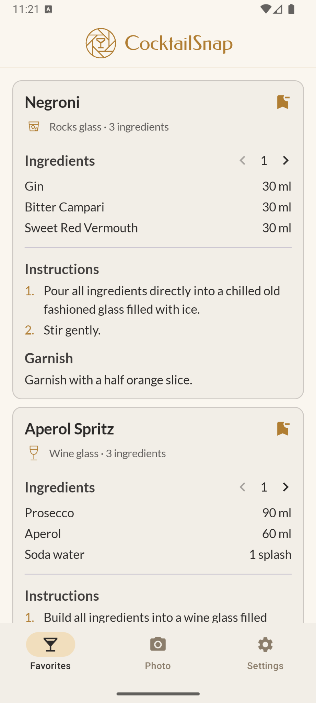

Rewriting My Expo App in Native Kotlin
September 17, 2026
Voice settings
It took Codex about 45 minutes to get my Expo app running in native Kotlin. From the initial prompt to a release submitted to Google Play, the whole process took no more than four hours.
I spent most of that time reviewing the result and deciding which parts should stay familiar and which should follow Android conventions.
Why I chose Expo
I built CocktailSnap with Expo and React Native. It scans the bottles in a home bar and suggests cocktails you can make with them.
I wanted to support Android and iOS, so a shared codebase made sense. Expo also handled much of the build and release tooling, giving me less to manage on my own.
Shopify had recently announced that it was moving from React Native back to Swift and Kotlin, explaining that coding agents had reduced the cost of building for both platforms. Notion had also announced plans to rebuild its mobile app natively.
Expo was still working well. But coding agents made me curious about the tradeoff: if I could ask an agent to build a native version from the existing app, how much work would the switch actually take?
One goal, 45 minutes
I gave Codex the CocktailSnap repository and a goal along these lines:
Rewrite my CocktailSnap application in Kotlin instead of Expo and React Native.
Match the navigation, screens, and behavior of the existing application. It should feel like the same application, not a new one.I did not specify an Android UI framework. Codex chose Jetpack Compose.
About 45 minutes later, the app was running in the Android emulator, connected to the existing backend. The photo flow, cocktail suggestions, recipes, favorites, and settings were working.
The existing app gave Codex a working reference for the screens, navigation, behavior, and integrations. Having those decisions already made gave the rewrite a clear target.
Making it feel like Android
The first version also showed a limitation in my instructions. I had asked Codex to match the existing app, and it had followed that request closely. The code was Kotlin and the UI was Compose, but it carried over custom components from the original design.
The tab bar and settings list were examples. Both reproduced the Expo version, even though standard Android components could handle the same interactions.
I refined the instructions: keep CocktailSnap recognizable, but use standard Android components where they fit. It took some back and forth to get there, and the result looked a little different from the Expo version.



Those choices took most of my attention. The colors, content, and behavior helped define CocktailSnap. The exact shape of a button or tab bar could change to fit the platform.
That became a more useful definition of parity than matching every pixel. I also took the opportunity to add a couple of small conveniences: glassware icons and automatic ingredient calculations for different numbers of servings.


Getting it into Google Play
The release workflow was the part I had worried about most. I had relied on Expo for builds and releases, and I expected publishing a native Android app to involve a lot of manual setup.
Codex handled the build and emulator work. For the release, Codex used the newly released Astra model, with computer use to operate the Google Play Console in the browser.
I guided the process through chat and approved its actions. Codex uploaded the release, navigated the submission flow, and updated the store screenshots to reflect the changes to the UI. I did not click through the console myself.
The four-hour total covered the rewrite, UI revisions, and release submission.
One codebase or two?
I have only done the Android half of the experiment. CocktailSnap has not shipped on iOS yet. Rebuilding it in Swift is the next test. Keeping both versions in sync as the product changes will tell me more about whether this approach is worth it.
A shared codebase still has real value. Two native apps need separate testing, review, and releases, and this rewrite does not tell me what maintaining them will cost.
What I learned is that trying a native implementation was cheap enough to do in an afternoon. I could build it, review the differences, and submit a release before committing to the longer experiment of maintaining two versions.
Expo was the right choice when I built CocktailSnap. What changed was the cost of reconsidering that choice.
Try CocktailSnap
If you have a few bottles at home, give CocktailSnap a try. Take a photo of your shelf and see which cocktails you can make. You can download the Android app below.